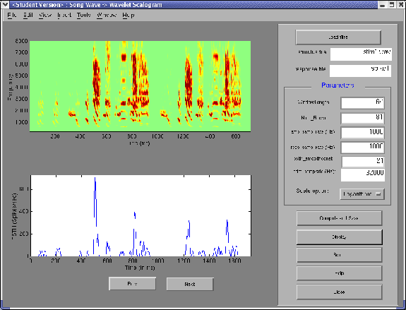
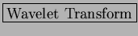
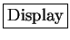
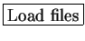
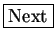
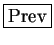

Next: Getting Input
Up: Get Input
Previous: Short Time Fourier Transform
Contents
Figure 3.5:
The Songwave Scalogram window in STRFPAK
|
 |
After clicking the
 button,
the Songwave scalogram
window shown in Figure 3.5
appears. The right panel of that window displays options for and properties of the wavelet transform. The left panel is used for displaying your output
when you click the
 button.
-
: is used to load raw data, e.g. sound wave files
and their associated response data files into STRFPAK.
The Load file window shown in Figure 3.3
pops-up after
is clicked. For a detailed description about this Load file window, please see above section.
- Parameters: All the parameters needed for the wavelet transform of the sound stimulus files are specified here. For a detailed
description about this method, please refer to our preprocessing
paper [].
- WindowLength: the window length of the Morlet analyzing
wavelet at its coarsest scale.
- Num_filters: the total number of the wavelet filters you want
to use. The larger the number of filters, the smoother of the scalogram, but the longer it takes to compute.
- amp_samprate (Hz): the sampling rate that we want for the amplitude
envelope. By default, it is 10 times of filter_width.
But you can change.
- resp_samprate (Hz): the sampling rate of the spike data. This must be set to the sampling frequency in Hz when you collect your data. For example, with 1 ms bins, the resp_samprate would be 1000 Hz.
- psth_smoothconst: the window length for smoothing your psth. For validation purposes, it is common to smooth the PSTH before calculating a correlation coefficient. psth_smoothconst is the width in ms of this smoothing window.
- stim_samprate (Hz): the sampling rate of stimuli in Hz. e.g. the demo
songwave file has a sampling frequency of 32000 Hz, and many music files have a sampling rate of 44100 Hz. It is automatically
calculated for you based on your sound wave file.
- Scale option: the choice of whether linear scale or logarithmic scale
is used for the amplitude envelope. For many sensory systems a neurons response correlates better to the log of a stimulus intensity better than to the stimulus intensity itself.
-
: Computes the spectrogram of the signal and saves
the result into the directory which you are asked to specify.
The computing status bar also shows up so that you can know the
progress of the computation.
-
: Graphically displays the scalogram of the stimulus and
the psth smoothed with psth_smoothconst window size.
If more than one data set are chosen,  and
 buttons show up so that you can click to see the
next data set.
- : Resets all the parameters and the data sets chosen.
 : Causes a help window on this window to appear.
: Causes a help window on this window to appear.
 : Closes this window and saves all the parameters and all the
results.
: Closes this window and saves all the parameters and all the
results.
Next: Getting Input
Up: Get Input
Previous: Short Time Fourier Transform
Contents
2004-08-09